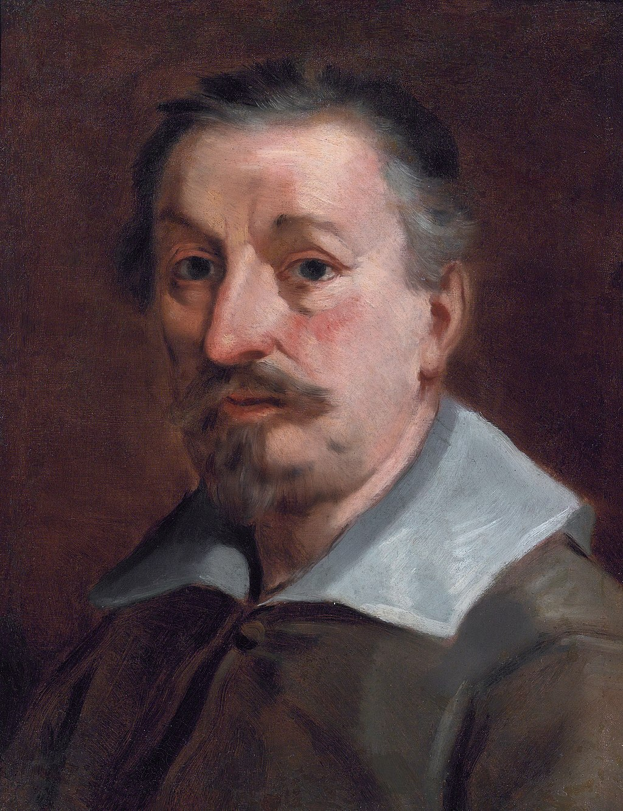

Periodo: 1578–1660
Ruolo: Pittore barocco bolognese
Allievo dei Carracci, Francesco Albani fu autore di opere dal gusto classico e poetico, spesso ispirate a soggetti mitologici e religiosi. Molto citato nei manoscritti di Oretti per la presenza delle sue opere in palazzi nobiliari e chiese bolognesi.